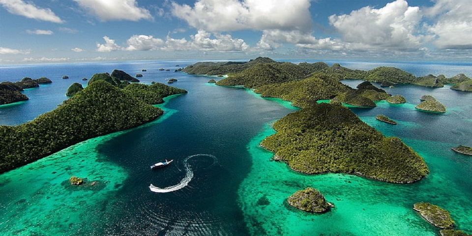

Everything You Need to Know About
Raja Ampat Islands
An archipelago spanning over forty thousand square kilometers and made up of about one thousand five hundred tiny islands, many of which are uninhabited, Raja Ampat is one of Indonesia’s most popular tourist destinations.
The name Raja Ampat, which means “The Four Kings”, comes from a local myth that tells a story of a woman who came across seven eggs. Out of the seven, four hatched and became kings that occupied four of Raja Ampat’s biggest islands—Batanta, Salawati, Waigeo and Misool.
Raja Ampat is part of the Coral Triangle that includes East Timor, Papua New Guinea, The Philippines, Malaysia and The Solomon Islands. The climate is tropical and the temperatures are mild all year round, making it so that anyone coming here on holiday can diving at Raja Ampat any time of the year. The surrounding landscape is made up of rainforests that provide a perfect contrast with the white sandy beaches. It truly is worth seeing for yourself. So, if you’re looking to go on vacation in Indonesia, you must go see Raja Ampat and stay in Papua Paradise one of the Eco Resort in Raja Ampat.
To know a little bit more about the islands, here are some useful information on The Four Kings:
- Waigeo – This is the largest out of the four islands. It is 3.155 km₂ and holds the capital city of Waisai. The Dampier Strait is what separates this island from Batanta Island. In the Northwest, the Bougainville Strait separates it from Kawe Islands.
- Misool – This island is the second largest. It is off the coast of Papua to the west and also borders the Seram Sea. Many of the marine animals that thrive in the Pacific swim through these waters turning Misool into a paradise for divers. This underwater paradise also extends to the other islands that make up Raja Ampat.
- Salawati – At 1.623 km₂, Salawati is the 3rd largest island in this archipelago. It is located in New Guinea on the Northwestern side. In order to reach the island, you will need to catch a boat. On your way there, you’ll get to take in the beauty of all the remote and uninhabited little islets and islands along the way.
- Batanta Island – This Island is the smallest of the 4 Kings and is also the craggiest, with its geography being a bit more rugged. Measuring only 453 km₂, Batanta is a great place to go bird watching, allowing you the chance to see unique species native to Raja Ampat. The Dampier Strait separates Batanta from Waigeo. Batanta Island is the nearest Island from Papua Paradise Eco Resort in Raja Ampat Regency.
Raja Ampat is definitely the place to be. Secluded sandy beaches, deep blue waters teeming with marine creatures, and landscapes to die for. Really, what more could you ask for? Contact us now.